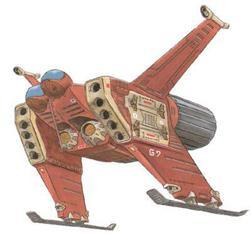

| Gattle Space Fighter |
|
|  | |
General and Technical Data |
|
|
Unit Type: space-use fighter-bomber Operator: Zeon Duchy Propulsion: 6 x rocket engine Fixed armaments: 4 x vulcan gun; 2 x 5-tube missile launcher; 4 x large rocket |
|
| Technical and Historical Notes | |
|
An old holdover from the UC 0060's, the Gattle was the very first military weapon designed by the then EFF province of Side 3. Designed before Minovski Particle Physics had become the bread and butter of military warfare, the Gattle is much smaller than the future failure X-1 fighter, and has a much lighter chassis, resolving the fuel consumption issue that plagued the X-1. However, it is also much less maneuverable, having about half as many directional thrusters. While it has two mutually ejectable cockpits, only one pilot is required. The gunner, originally having the job of programming missile targetting data, lost his job with the advent of the Minovski Particle field.
Before Side 3's independance, less than ten Gattles were in the service of the Side 3 government, but more than 500 Gattles were produced for Zeon Zum Deikun's Zeon Elite Force, and it would remain in production alongside the Zaku I up until 0078. What the Gattle did have going for it above the MS-05 was in firepower. It arms 4 fire linked vulcan guns positioned under the twin cockpits, as well as 10 anti-fighter use missiles. Four larger anti battleship rockets can be mounted on external pylons. However, its inability to effectively dodge battleship AA batteries, as well as the rollout of the nuclear bazooka equipped Zaku II C, rendered the Gattle totally obsolete. The Gattle did nearly as badly as EFF model weaponry in the Lourm campaign, but even still almost 200 Gattles still remain in service, although these have been moved to positions defending shoal zones and patrolling the colonies of Side 3, and a few have found their way to the black market. |
 RPG quick stats sheet
RPG quick stats sheet